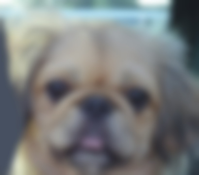
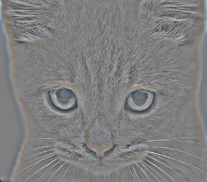
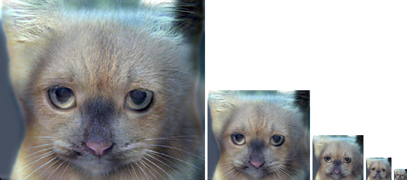
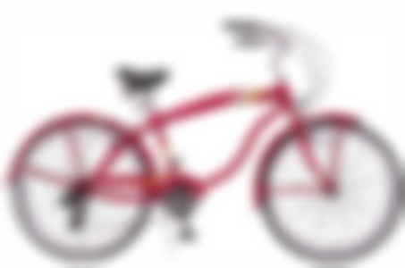
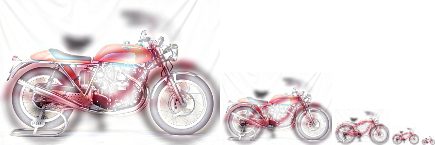
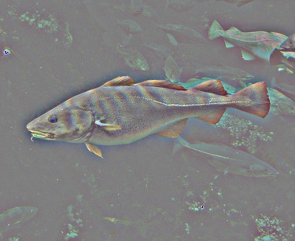
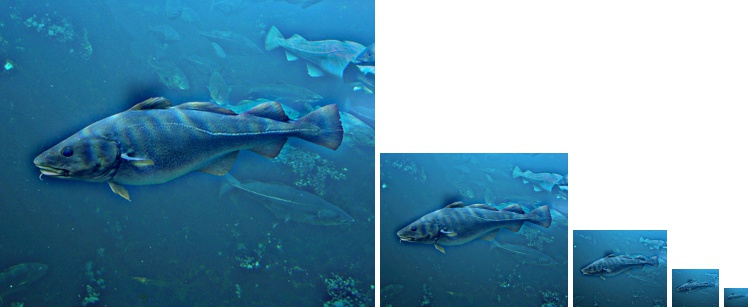
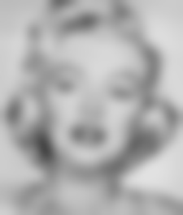
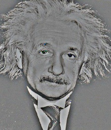
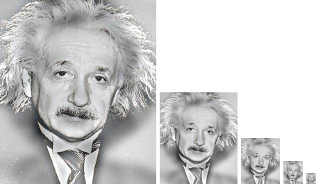

The general structure used for generating hybrid images consisted of the following three phases:
The primary focus of the setup phase is to standardize the image framing process. This is achieved by buffering each edge of the provided image based on the provided filter's dimensions. For example, if the provided filter is a 29x29 matrix, then the buffer size gets set at 29 and the image's color channel edges are framed by a similarly sized 29x29 buffer. I elected to symmetrically pad the image utilizing the numpy pad function after initially framing the image by hand with a black buffer (womp womp #1).
%buffer size function used to determine the filter's dimensions
def get_buffer_sizes(filter):
buffer_size = np.uint8(filter.shape[0])
if is_1d_col(filter):
buffer_size = np.uint8(filter.shape[1])
half_buffer = np.uint8((buffer_size - 1) / 2)
return buffer_size, half_buffer
%framing function
%the color_channels function separates an image into an interable channel component list
%the stacker function recombines the list of channels into a numpy array
def frame_image(image, buffer_size):
buff = np.int(buffer_size)
channels = [np.pad(channel, ((buff,buff), (buff,buff)), 'symmetric') for channel in color_channels(image)]
return stacker(channels)
Low frequency fish generated by my_imfilter function.
The filter process (my_imfilter) is the meat and potatoes of the program. A hideous for loop convolves each framed image pixel's neighbors with the provided filter for all three color channels. The setup phase ensures that each pixels neighbors, shall we say neighborhood, has similar dimensions as the provided function. The convolution output for each color channel is then recombined back into a numpy array. Please note that while I'm checking for 1-D filters, this is purely to ensure appropriate indexing and the overall process is treated the same regardless of the filter's dimensions. Numpy greatly simplified the process of taking the dot product, but of course I didn't realize that until re-reading the directions immediately prior to the deadline (womp womp #2). There is surely a more elegant way of handling the 1-D convolutions than what I've laid out], but nevertheless the separable convolutions seem to generate appropriate hybrid images.
%relevant filtering code
%result is assigned as the filtered channel's pixel value
neighbors = channel[i - HALF_BUFFER:i + HALF_BUFFER + 1, j - HALF_BUFFER:j + HALF_BUFFER + 1]
result = filter_neighborhood(filter, neighbors)
%relevant filter_neighborhood code
np.sum(np.multiply(filter, neighbors))
High frequency motorcycle generated by subtracting low frequencies from base image.
After the setup and filtering phases the composition portion is relatively straightforward. The previously describes filtering process is leveraged to generate an image's low frequencies. The high frequencies are generated by subtracting the low frequencies from the high frequencies. Hybrid images are thus created by recombining the low and high frequencies of different images. Clipping has been greatly simplified by numpy, which I wish I had paid attention to initially instead of doing it myself (womp womp #3).
%relevant hybrid composition code
%first line subtracts the low frequencies from base to get high frequencies
%second line recombines high frequencies of one image with low frequencies of another image
high_frequencies = [img2_channel - low_frequencies2_channels[index] for index, img2_channel in enumerate(img2_channels)]
hybrid = [high_frequencies[index] + low_channel1 for index, low_channel1 in enumerate(low_frequencies1_channels)]
|    |
|   |
|   |
|    |
The hybrids that seemed to work best largely seemed to occur with images that were geometrically similar, but had dissimilar frequency compositions. For example, the fish/submarine hybrid didn't really turn out well combining the low frequency fish component with the high frequency submarine component despite similar geometric structure. Similarly, if the structural components were dissimilar the hybrid images were distracting and difficult to focus on. As a total aside, Apple is definitely filtering FaceTime videos somehow bc when I was showing some friends the frequencies were inverted (i.e. the dog-cat hybrid image was reversed).